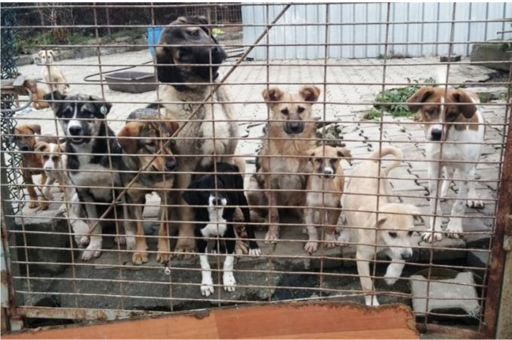
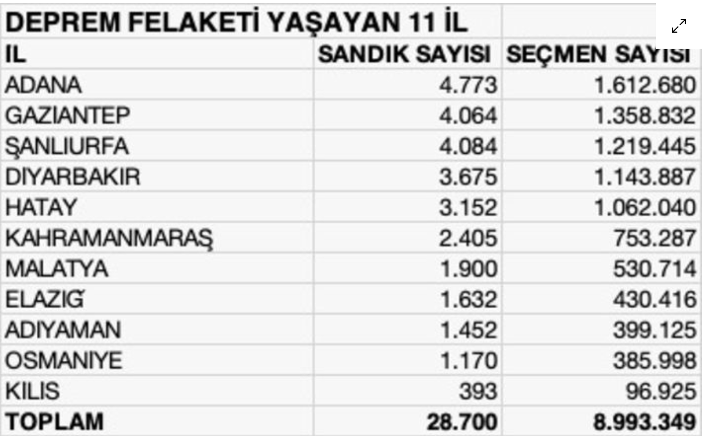

| HABER BAŞLIĞI | HABER GÖRSELİ | HABER YAZARI |
|---|---|---|
| Türkiye’de bir ilk; içinde hayvan hastanesi ve hayvan oteli olan barınak!.. |  | |
|
Bu kadar basit olmamalı Varlığından bile haberimin olmadığı bir oyun, mahkeme kararı ile yasaklanmış. Önce oyunun ne olduğunu anlamaya çalıştım. Daha çok çocukların oynadığı bir oyun türü. Dünyada 200 milyona yakın kullanıcısı varmış ve ABD’de 16 yaşından küçük çocukların yarıya yakını bu oyun platformunu kullanıyormuş. |
||
| Depremzede seçmenle ilgili tuhaf bir durum var |  | |
| "Beyrut.. Kalbimden selamlar sana ey Beyrut.. Öpücükler denizine ve evlerine.. Eski bir denizci yüzü gibi olan bir taşına. Beyrut küllerin şanına sahip şimdi... Şehrim söndürdü ışıklarını; Elinin üstünde tuttuğu bir çocuğun kanıyla Kapattı kapılarını ve gökyüzünde yalnız kaldı Geceyle beraber..." |